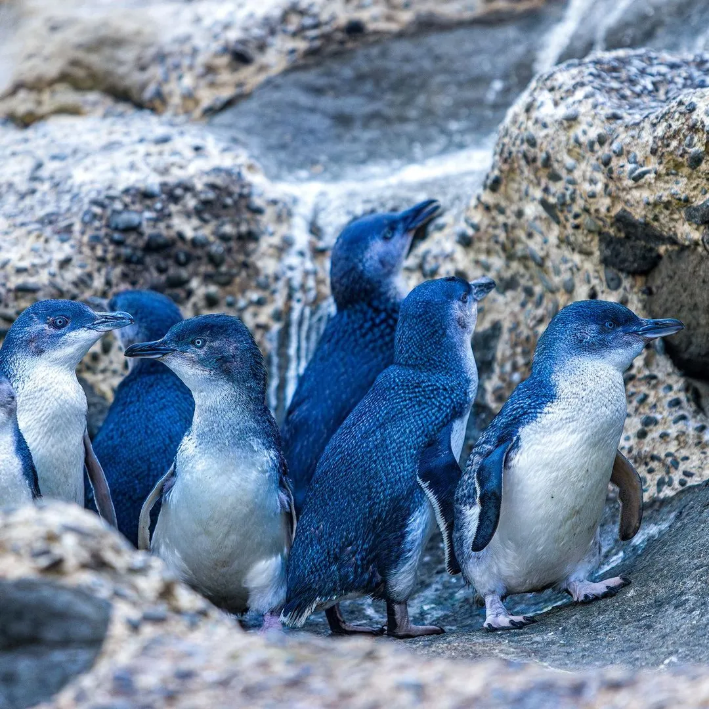
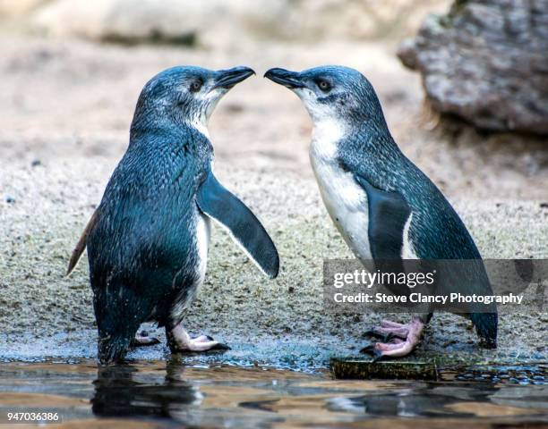
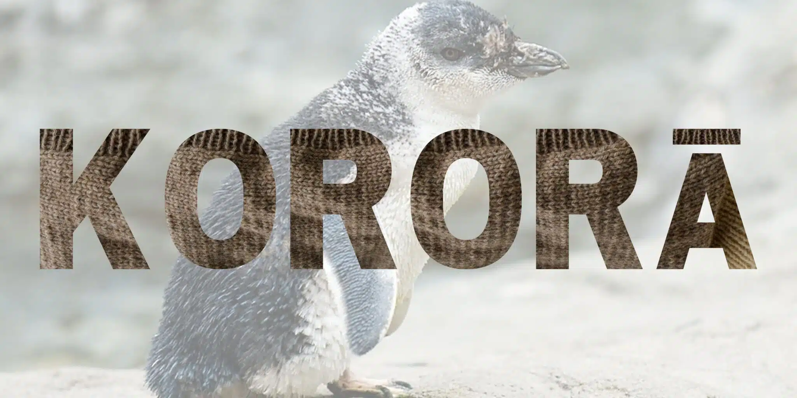

The Little Penguin
It's the smallest penguin in the world.

Key Facts
- They known as Kororā in Maori
- They stand only 30-35cm tall and weightning about 1.5kg.
- They spend day fishing and return to land at dusk.
- Their lifespan averages around 7 years, but they can live up to 25 years old.
- They usually lay 2 eggs, incubated for 36 days
- Scientific name is "Eudyptula minor" translating to "good little diver"
How do they look like?
They stand only about 30-35cm tall and weigh approxmately 1.5kg. They have characteristic blue-grey or indigo clue-black feathers and white underparts.This blue coloring helps them camouflage in the water. They have dark grey, hooked bills and off white feet with dark soles.

Where do they live?
- Kororā live along all New Zealand coastlines, offshore islands, and in Southern Australia. Favoring rocky shores, sandy beaches, and dunes.
- They nest in underground burrows, vegetation, or under man-made structures like sheds, and returning to land only at dusk.
- Little penguins from New Zealand and Australia are called "Eudyptula minor." There are 2 two types: one containing little penguins of New Zealand's North Island, Cook Strait and Chatham Island, as well as the white-flippered penguin. And the second containing little penguiuns of Australia and Otago region of New Zealand.
What do they eat?
- They are carnivores that hunt at sea, feeding primarily on small shoaling fish like sprats, anchovies, and sardines and squid, and crustaceans.
- They are pursuit divers,usually foraging 10-30m deep, though they can reach 70m.
- They can drink salt water and absorb nutrients from their diet
- The largest colonies are on Motunau Island (1650 nests), Pohatu Bay, Banks Peninsula (1250 pairs), and at the Oamaru Blue Penguin colony (>1,000 individuals).

Behaviour and ecology
- Little penguins are nocturnal on land
- They return to nesting areas at dusk,congregating in small groups, or "rafts" offshore. Rafts usually come ashore together and are comprised of the same individuals each night.
- They feed at sea as solitary individuals or small groups, with groups rarely containing more than 6 individuals.
- They must stay ashore continuously for about 2 weeks during the annual moult (mainly between January and March), when all feathers are replaced simultaneously.

Fun Facts
- They use their paddle-like flippers to fly through the water at speed up to 6km/h.
- They have roughly 10,000 blue and white feathers which three to four times more than most birds that fly
- Their slate blue backs help them blend in with the ocean from above,while white bellies hide them from preditors below.
- They can dive as deep as 70m to hunt for squid and small fishes
- They are nocturnal on land, returning to their burrows at dusk to avoid predators, and spend their days at sea
- Kororā can recognize each other's faces and voices, and some research suggests they can recognize humans.
- According to local legend in Russell, the name Kororā came from a Maori chief who,upon testing penguin soup, exclaimed "Ka reka te korora!"("how sweet/tasty is the penguin").
- They are the only penguins that can fly long distances in the air to migrate.
